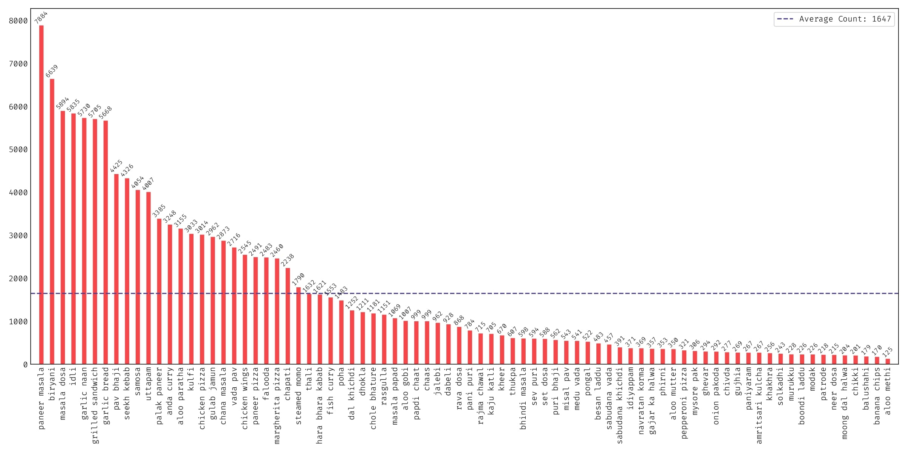
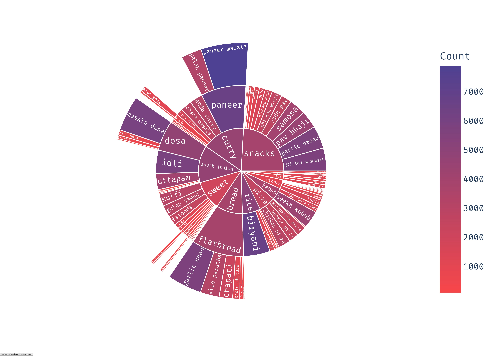

What is Khana?
Khana is a food classification dataset featuring the wide range of dishes from Indian cuisine. The goal of this dataset is to solve challenges found in existing datasets: lack of representation of Indian food dishes, generalization over limited diversity due to Western-influenced classes, conditions, viewpoints and environments. Khana is meant to be an academic resource and has significant limitations. For more details about Khana, please refer to our preprint:Khana contains 131,000+ images comprising of 80 food dishes. You can download the labels from the dataset here and the taxonomy created during its inception here. Khana does not own the copyright of the images. Khana only compiles an accurate list of web images for each food dish. It is available for researchers and educators who wish to use the images for non-commercial research and/or educational purposes only.  
Download
Browse the examples in Khana:Download a copy of the dataset in zip format:
Leaderboard
Look out for the best Khana model out here!| Rank | Model | Acc@1 | Acc@5 | Params |
|---|---|---|---|---|
|
ConvNeXT-S
Baseline |
86.72 | 97.58 | 49.49M | |
|
TBD
TBD
|
TBD | TBD | TBD | TBD |